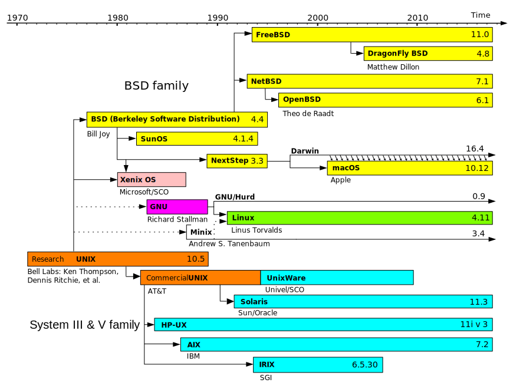
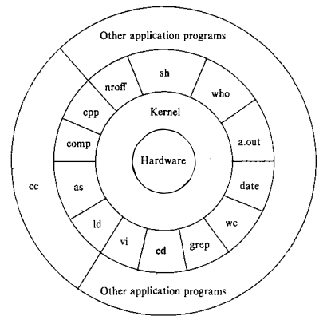
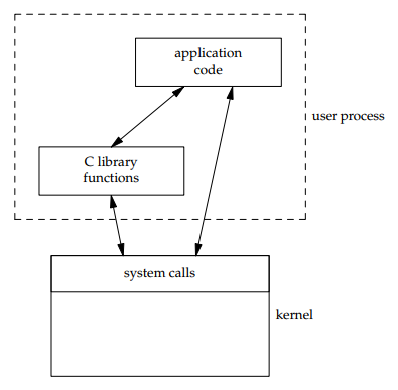

自 1969 年成立开始，Unix 系统便迅速流行，因为它为各种不同硬件架构的机器提供了统一的运行环境。Unix 系统分为两部分，一部分是程序 (programs) 和服务 (services) ,它们是供用户使用的，包括 Shell，邮件，文字处理包，源码控制系统等。另一部分是支持这些程序和服务的操作系统。
发展历史
- 1965 年，Bell Telephone Laboratory，通用电气公司以及 MIT 的 MAC计划小组共同开发了 Multics 这个新的操作系统。
- Multics 系统的原始版本确实在 GE 645 机器上运行，但因为没有提供预期统一计算服务，再加上发展目标不明确，因此，贝尔实验室结束了对该项目的支持。
- 贝尔实验室的科学家们打算改进它们自己的编程环境，于是，Ken Thompson, Dennis Ritchie 等人起草了一份文件系统 (file system) 设计的白皮书，后来推动了早期 Unix 文件系统的发展。后来再加上进程子系统和一些工具，Unix 就这样诞生了。其名称是相对于 Multics 的复杂而取的，暗含了 Unix 系统的精简。
- 第一版使用汇编语言和 B 语言写成。Ritchie 改进了 B 语言，创造了 C 语言，用来生成机器码，声明数据类型，定义数据结构。1973 年，系统用 C 语言重写。
- 1974年，汤普逊和里奇合作在 ACM 通信上发表了一篇关于 UNIX 的文章，这是 UNIX 第一次出现在贝尔实验室以外。
- 1982年，贝尔实验室综合了 AT&T 开发的中多版本，形成了 UNIX System Ⅲ，不久有增加了一些新功能，重新命名为 UNIX System V，然而，加州大学伯克利分校开发了 BSD 4.3，其作为 UNIX System III 和 V 的替代选择。
后来的事情大概也都是那些快速的发展和更迭，以及新特性的不断加入。目前，许多操作系统都是由 Unix 发展而来的，包括 Mac OS X，Linux 等。下图是 Unix 极其衍生操作系统发展过程的简单表示。

系统结构
将系统视为若干层，其中操作系统 (operating system, system kernel or just kernel) 直接与硬件交互，为上层程序提供通用服务并将它们与硬件特性隔离开来。

kernel 外的一层是 low-level 的程序，通过 系统调用 (system call) 与内核交互，这些程序包括 shell sh 和 editor vi，标准系统配置命令 (commands)，以及 a.out 这种由 C 编译器生成的可执行文件。同时，许多应用或程序是由许多 low-level 组合而成的，叫做 high-level 程序，这些程序通过对底层程序的调用，为用户提供了更好的界面和操作，同时简化了开发。
编程接口
在使用 C 语言编程实现某个功能时候，应当明确可以使用哪些基础库，包括：
- C 标准库
- 其他库
- POSIX (Portable Operating System Interface of Unix)
- Linux Library
- Windows Library
- …
首先，应当尽可能使用 C 标准库中的接口，这些库保证了最佳的可移植性。当然编写 C 语言的代码不可避免的将会用到这些库。
在实际编程时，应尽量首选 POSIX 标准库接口，对于 Unix、Linux 以及 Mac OS X 系统，甚至 Windows 都具有较好的可移植性。标准定义了接口的规范，而不同的操作系统根据自身平台的特征实现了这些接口。
最后，考虑 Linux 库以及 Windows 库等，除非你确定编写的程序不需要跨平台使用。由于大部分时候我们的代码将会运行在 Linux 内核的机器上，因此有时候想要用到 Linux 内核相关功能，而 POSIX 标准没有涵盖这个接口的话，将不可避免的使用到 Linux 提供的相关库。
List of standard header files in C and C++ 有一份详细的目录可以帮助你了解这些头文件。
C Standard Library Headers
C 标准库也称为 ISO C 库，主要经历了 C89, C99, C11 三个大版本，目前包括 29 个头文件。详细说明可以在 C Standard Library header files 进行查阅。
ISO/IEC 9045:2008 (POSIX 2008, Single Unix Specification)
C POSIX 库是与标准库同时发展的，它是 POSIX 系统中 C 标准库的规范，作为标准库的超集，其不仅兼容标准库，同时还引入了额外的功能。目前包括 82 (包含所有 C99 头文件) 个头文件。
头文件详细说明可以在 IEEE and The Open Group 网站中的 IEEE Std POSIX.1-2017 进行查询。
GNU/Linux
GNU/Linux 是 POSIX 兼容的系统，其使用了 GNU C Library (glibc) 的实现，该实现兼容 C 标准库、POSIX 库等，可以使用 man 手册查阅相关 C 库用法。
Windows
Windows 有自己的头文件，可以在 MSDN 中找到，但也有 POSIX 兼容的版本，例如 Cygwin, MinGW 等。
系统调用和库函数
所有的操作系统都提供多种服务的入口点，由此程序向内核请求服务。各种版本的 Unix 实现都提供良好定义、数量有限、直接进入内核的入口点，这些入口点被称为系统调用 (system call)。不同的系统提供了不同的几十、上百个系统调用，具体数字在不同操作系统版本中会不同，
系统调用接口是用 C 语言定义的，Unix 所使用的技术是为每个系统调用在标准 C 库中设置一个具有同样名字的包装函数。用户进程用标准 C 代码来调用这些函数，然后这些函数又用系统所要求的技术调用相应的内核服务。
程序员可以使用的通用库函数在内部实现时可能会调用一个或多个内核的系统调用，但是它们并不是内核的入口点。同时，库函数当然也可以不使用任何内核的系统调用，这样的库函数仅仅是一些标准库为我们准备的用户层面代码而已。
从实现者的角度来看，系统调用和库函数之间有根本的区别，但从用户角度来看，其区别并不重要。特别是包装函数的存在，使得系统调用和库函数都以 C 函数的形式出现，两者都为应用程序提供服务。但是，我们应当理解库函数可以被替换，系统调用通常是不能被替换的。
应用程序既可以调用系统调用也可以调用库函数，而很多库函数则会调用系统调用。



{kind=link}